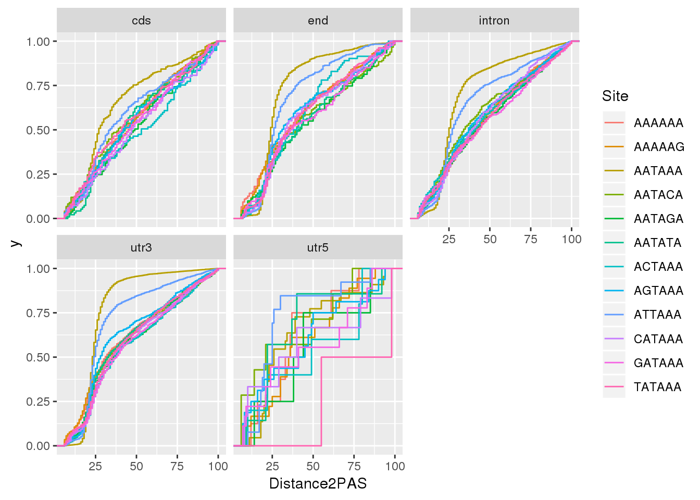
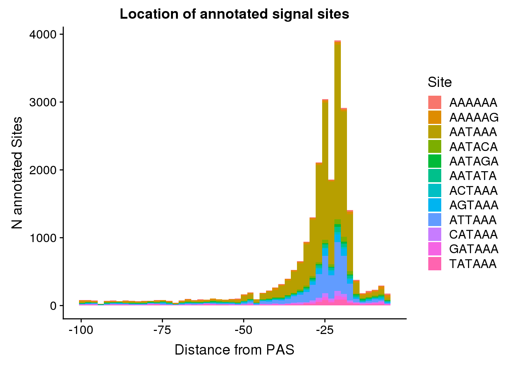
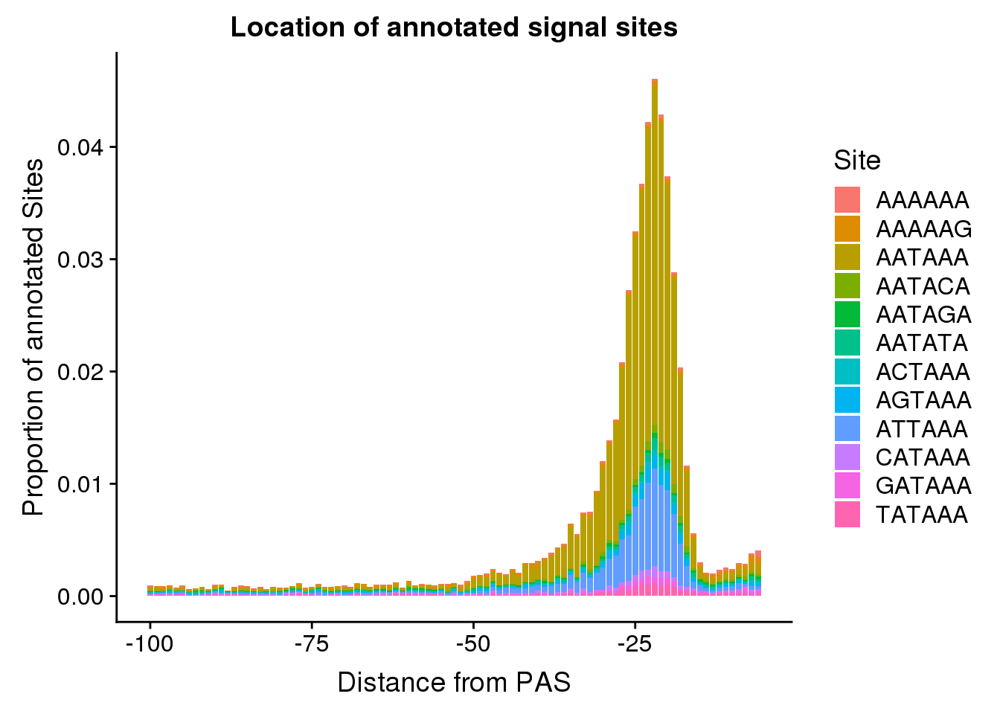
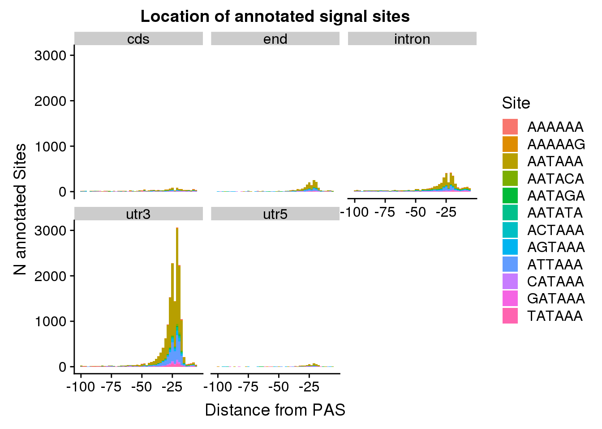
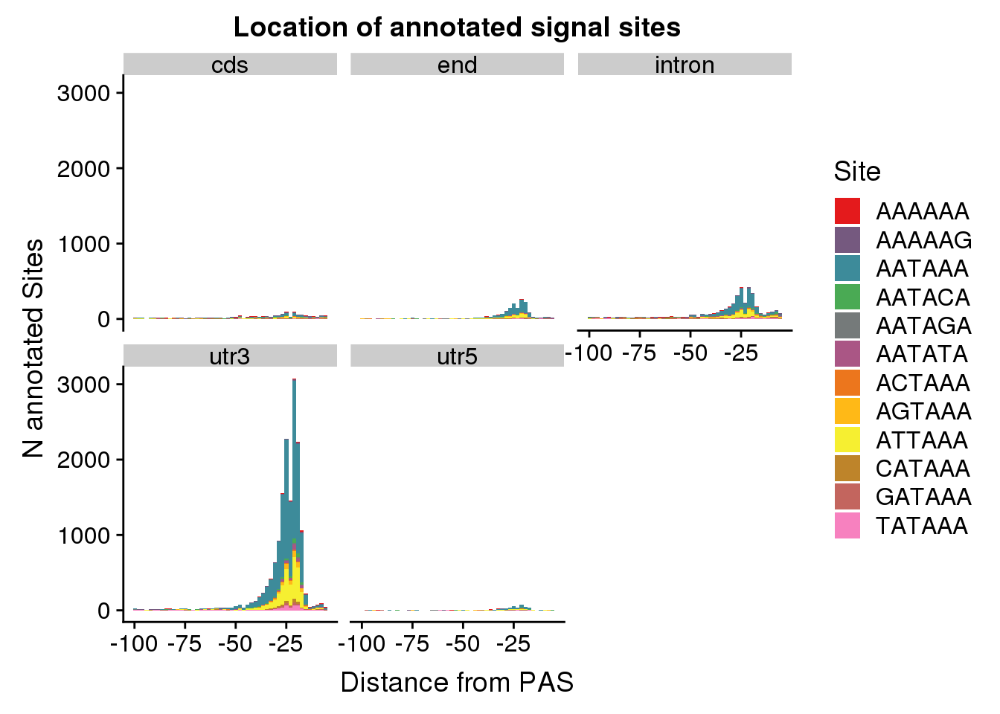
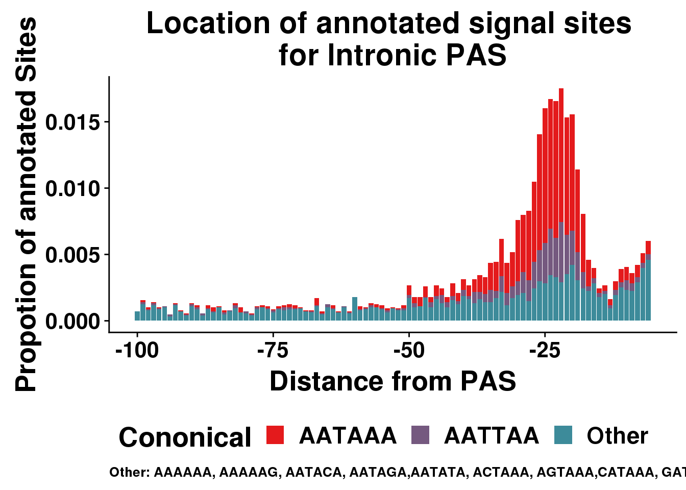
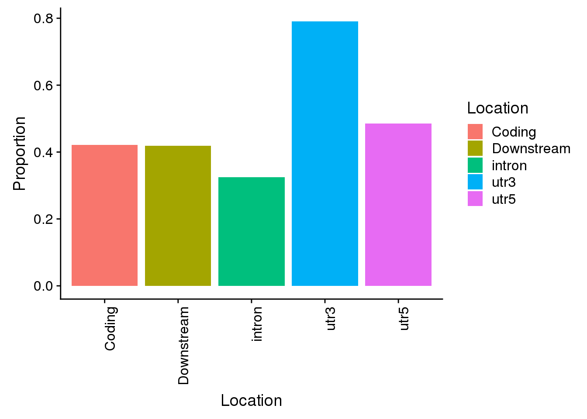
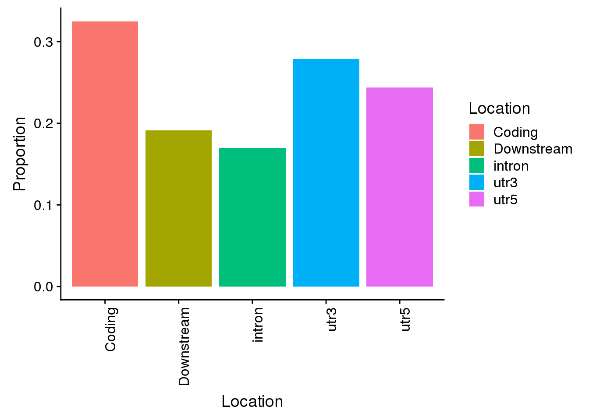
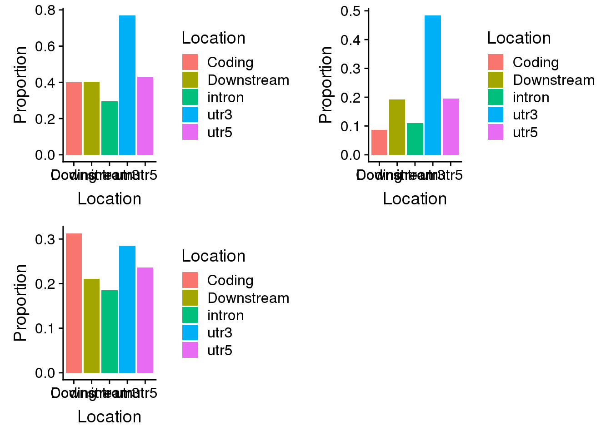

Last updated: 2019-06-13
Checks: 6 0
Knit directory: apaQTL/analysis/
This reproducible R Markdown analysis was created with workflowr (version 1.3.0). The Checks tab describes the reproducibility checks that were applied when the results were created. The Past versions tab lists the development history.
Great! Since the R Markdown file has been committed to the Git repository, you know the exact version of the code that produced these results.
Great job! The global environment was empty. Objects defined in the global environment can affect the analysis in your R Markdown file in unknown ways. For reproduciblity it’s best to always run the code in an empty environment.
The command set.seed(20190411) was run prior to running the code in the R Markdown file. Setting a seed ensures that any results that rely on randomness, e.g. subsampling or permutations, are reproducible.
Great job! Recording the operating system, R version, and package versions is critical for reproducibility.
Nice! There were no cached chunks for this analysis, so you can be confident that you successfully produced the results during this run.
Great! You are using Git for version control. Tracking code development and connecting the code version to the results is critical for reproducibility. The version displayed above was the version of the Git repository at the time these results were generated.
Note that you need to be careful to ensure that all relevant files for the analysis have been committed to Git prior to generating the results (you can use wflow_publish or wflow_git_commit). workflowr only checks the R Markdown file, but you know if there are other scripts or data files that it depends on. Below is the status of the Git repository when the results were generated:
Ignored files:
Ignored: .DS_Store
Ignored: .Rhistory
Ignored: .Rproj.user/
Ignored: output/.DS_Store
Untracked files:
Untracked: .Rprofile
Untracked: ._.DS_Store
Untracked: .gitignore
Untracked: _workflowr.yml
Untracked: analysis/._PASdescriptiveplots.Rmd
Untracked: analysis/._cuttoffPercUsage.Rmd
Untracked: analysis/QTLexampleplots.Rmd
Untracked: analysis/cuttoffPercUsage.Rmd
Untracked: analysis/eQTLoverlap.Rmd
Untracked: analysis/oldstuffNotNeeded.Rmd
Untracked: apaQTL.Rproj
Untracked: code/.NascentRNAdtPlotFirstintronicPAS.sh.swp
Untracked: code/._ApaQTL_nominalNonnorm.sh
Untracked: code/._BothFracDTPlotGeneRegions_normalized.sh
Untracked: code/._FC_NucintornUpandDown.sh
Untracked: code/._FC_UTR.sh
Untracked: code/._FC_intornUpandDownsteamPAS.sh
Untracked: code/._FC_newPeaks_olddata.sh
Untracked: code/._HMMpermuteTotal.py
Untracked: code/._HmmPermute.py
Untracked: code/._LC_samplegroups.py
Untracked: code/._NascentRNAdtPlot.sh
Untracked: code/._NascentRNAdtPlot3UTRPAS.sh
Untracked: code/._NascentRNAdtPlotExcludeFirstintronicPAS.sh
Untracked: code/._NascentRNAdtPlotNucPAS.sh
Untracked: code/._NascentRNAdtPlotTotPAS.sh
Untracked: code/._NascentRNAdtPlotintronicPAS.sh
Untracked: code/._NascnetRNAdtPlotPAS.sh
Untracked: code/._NetSeq_fourthintronDT.sh
Untracked: code/._QTL2bed.py
Untracked: code/._QTL2bed_withstrand.py
Untracked: code/._SnakefilePAS
Untracked: code/._SnakefilefiltPAS
Untracked: code/._TESplots100bp.sh
Untracked: code/._TESplots150bp.sh
Untracked: code/._TESplots200bp.sh
Untracked: code/._Untitled
Untracked: code/._ZipandTabPheno.sh
Untracked: code/._aAPAqtl_nominal39ind.sh
Untracked: code/._apaQTLCorrectPvalMakeQQ.R
Untracked: code/._apaQTL_Nominal.sh
Untracked: code/._apaQTL_permuted.sh
Untracked: code/._assignNucIntonpeak2intronlocs.sh
Untracked: code/._assignTotIntronpeak2intronlocs.sh
Untracked: code/._bam2BW_5primemost.sh
Untracked: code/._bed2saf.py
Untracked: code/._bothFracDTplot1stintron.sh
Untracked: code/._bothFracDTplot4thintron.sh
Untracked: code/._bothFrac_FC.sh
Untracked: code/._callPeaksYL.py
Untracked: code/._chooseAnno2SAF.py
Untracked: code/._chooseSignalSite
Untracked: code/._chooseSignalSite.py
Untracked: code/._cluster.json
Untracked: code/._clusterPAS.json
Untracked: code/._clusterfiltPAS.json
Untracked: code/._codingdms2bed.py
Untracked: code/._config.yaml
Untracked: code/._config2.yaml
Untracked: code/._configOLD.yaml
Untracked: code/._convertNominal2SNPLOC.py
Untracked: code/._convertNumeric.py
Untracked: code/._correctNomeqtl.R
Untracked: code/._dag.pdf
Untracked: code/._eQTLgenestestedapa.py
Untracked: code/._encodeRNADTplots.sh
Untracked: code/._extractGenotypes.py
Untracked: code/._extractseqfromqtlfastq.py
Untracked: code/._fc2leafphen.py
Untracked: code/._filter5perc.R
Untracked: code/._filter5percPheno.py
Untracked: code/._filterpeaks.py
Untracked: code/._finalPASbed2SAF.py
Untracked: code/._fix4su304corr.py
Untracked: code/._fix4su604corr.py
Untracked: code/._fix4sukalisto.py
Untracked: code/._fixExandUnexeQTL
Untracked: code/._fixExandUnexeQTL.py
Untracked: code/._fixFChead.py
Untracked: code/._fixFChead_bothfrac.py
Untracked: code/._fixH3k12ac.py
Untracked: code/._fixRNAhead4corr.py
Untracked: code/._fixRNAkalisto.py
Untracked: code/._fixgroupedtranscript.py
Untracked: code/._fixhead_netseqfc.py
Untracked: code/._getAPAfromanyeQTL.py
Untracked: code/._getApapval4eqtl.py
Untracked: code/._getApapval4eqtl_unexp.py
Untracked: code/._getDownstreamIntronNuclear.py
Untracked: code/._getIntronDownstreamPAS.py
Untracked: code/._getIntronUpstreamPAS.py
Untracked: code/._getQTLalleles.py
Untracked: code/._getQTLfastq.sh
Untracked: code/._getUpstreamIntronNuclear.py
Untracked: code/._grouptranscripts.py
Untracked: code/._keep5perMAF.py
Untracked: code/._keepSNP_vcf.sh
Untracked: code/._make5percPeakbed.py
Untracked: code/._makeFileID.py
Untracked: code/._makePheno.py
Untracked: code/._makeSAFbothfrac5perc.py
Untracked: code/._makeSNP2rsidfile.py
Untracked: code/._makeeQTLempirical_unexp.py
Untracked: code/._makeeQTLempiricaldist.py
Untracked: code/._makegencondeTSSfile.py
Untracked: code/._mergeAllBam.sh
Untracked: code/._mergeBW_norm.sh
Untracked: code/._mergeBamNascent.sh
Untracked: code/._mergeByFracBam.sh
Untracked: code/._mergePeaks.sh
Untracked: code/._mnase1stintron.sh
Untracked: code/._mnaseDT_fourthintron.sh
Untracked: code/._namePeaks.py
Untracked: code/._netseqDTplot1stIntron.sh
Untracked: code/._netseqFC.sh
Untracked: code/._peak2PAS.py
Untracked: code/._peakFC.sh
Untracked: code/._pheno2countonly.R
Untracked: code/._processYRIgen.py
Untracked: code/._qtlRegionseq.sh
Untracked: code/._qtlsPvalOppFrac.py
Untracked: code/._quantassign2parsedpeak.py
Untracked: code/._removeXfromHmm.py
Untracked: code/._removeloc_pheno.py
Untracked: code/._runCorrectNomEqtl.sh
Untracked: code/._runHMMpermuteAPAqtls.sh
Untracked: code/._runHMMpermuteeQTLS.sh
Untracked: code/._runMakeEmpiricaleQTL_unexp.sh
Untracked: code/._runMakeeQTLempirical.sh
Untracked: code/._run_getApaPval4eqtl.sh
Untracked: code/._run_getapafromeQTL.py
Untracked: code/._run_getapafromeQTL.sh
Untracked: code/._run_getapapval4eqtl_unexp.sh
Untracked: code/._run_leafcutterDiffIso.sh
Untracked: code/._run_sepUsagephen.sh
Untracked: code/._run_sepgenobychrom.sh
Untracked: code/._selectNominalPvalues.py
Untracked: code/._sepUsagePhen.py
Untracked: code/._sepgenobychrom.py
Untracked: code/._snakemakePAS.batch
Untracked: code/._snakemakefiltPAS.batch
Untracked: code/._submit-snakemakePAS.sh
Untracked: code/._submit-snakemakefiltPAS.sh
Untracked: code/._subsetApanoteGene.py
Untracked: code/._subsetUnexplainedeQTLs.py
Untracked: code/._subset_diffisopheno.py
Untracked: code/._subsetpermAPAwithGenelist.py
Untracked: code/._subtrachfiveprimeUTR.sh
Untracked: code/._subtractExons.sh
Untracked: code/._subtractfiveprimeUTR.sh
Untracked: code/._tabixSNPS.sh
Untracked: code/._utrdms2saf.py
Untracked: code/.snakemake/
Untracked: code/APAqtl_nominal.err
Untracked: code/APAqtl_nominal.out
Untracked: code/APAqtl_nominal_39.err
Untracked: code/APAqtl_nominal_39.out
Untracked: code/APAqtl_nominal_nonNorm.err
Untracked: code/APAqtl_nominal_nonNorm.out
Untracked: code/APAqtl_permuted.err
Untracked: code/APAqtl_permuted.out
Untracked: code/ApaQTL_nominalNonnorm.sh
Untracked: code/BothFracDTPlot1stintron.err
Untracked: code/BothFracDTPlot1stintron.out
Untracked: code/BothFracDTPlot4stintron.err
Untracked: code/BothFracDTPlot4stintron.out
Untracked: code/BothFracDTPlotGeneRegions.err
Untracked: code/BothFracDTPlotGeneRegions.out
Untracked: code/BothFracDTPlotGeneRegions_norm.err
Untracked: code/BothFracDTPlotGeneRegions_norm.out
Untracked: code/BothFracDTPlotGeneRegions_normalized.sh
Untracked: code/DistPAS2Sig.py
Untracked: code/EncodeRNADTPlotGeneRegions.err
Untracked: code/EncodeRNADTPlotGeneRegions.out
Untracked: code/FC_NucintornUpandDown.sh
Untracked: code/FC_NucintronPASupandDown.err
Untracked: code/FC_NucintronPASupandDown.out
Untracked: code/FC_UTR.err
Untracked: code/FC_UTR.out
Untracked: code/FC_UTR.sh
Untracked: code/FC_intornUpandDownsteamPAS.sh
Untracked: code/FC_intronPASupandDown.err
Untracked: code/FC_intronPASupandDown.out
Untracked: code/FC_newPAS_olddata.err
Untracked: code/FC_newPAS_olddata.out
Untracked: code/FC_newPeaks_olddata.sh
Untracked: code/HMMpermuteTotal.py
Untracked: code/HmmPermute.p
Untracked: code/HmmPermute.py
Untracked: code/LC_samplegroups.py
Untracked: code/NascentDTPlotGeneRegions.err
Untracked: code/NascentDTPlotGeneRegions.out
Untracked: code/NascentDTPlotPAS.err
Untracked: code/NascentDTPlotPAS.out
Untracked: code/NascentDTPlotPAS_3utr.err
Untracked: code/NascentDTPlotPAS_3utr.out
Untracked: code/NascentDTPlotPAS_firstintron.err
Untracked: code/NascentDTPlotPAS_firstintron.out
Untracked: code/NascentDTPlotPAS_intron.err
Untracked: code/NascentDTPlotPAS_intron.out
Untracked: code/NascentDTPlotPAS_nuc.err
Untracked: code/NascentDTPlotPAS_nuc.out
Untracked: code/NascentDTPlotPAS_tot.err
Untracked: code/NascentDTPlotPAS_tot.out
Untracked: code/NascentRNAdtPlot.sh
Untracked: code/NascentRNAdtPlot3UTRPAS.sh
Untracked: code/NascentRNAdtPlotExcludeFirstintronicPAS.sh
Untracked: code/NascentRNAdtPlotFirstintronicPAS.sh
Untracked: code/NascentRNAdtPlotNucPAS.sh
Untracked: code/NascentRNAdtPlotTotPAS.sh
Untracked: code/NascentRNAdtPlotintronicPAS.sh
Untracked: code/NascnetRNAdtPlotPAS.sh
Untracked: code/NetSeq_fourthintronDT.sh
Untracked: code/QTL2bed.py
Untracked: code/QTL2bed_withstrand.py
Untracked: code/README.md
Untracked: code/Rplots.pdf
Untracked: code/TESplots100bp.err
Untracked: code/TESplots100bp.out
Untracked: code/TESplots100bp.sh
Untracked: code/TESplots150bp.err
Untracked: code/TESplots150bp.out
Untracked: code/TESplots150bp.sh
Untracked: code/TESplots200bp.err
Untracked: code/TESplots200bp.out
Untracked: code/TESplots200bp.sh
Untracked: code/Untitled
Untracked: code/Upstream100Bases_general.py
Untracked: code/ZipandTabPheno.sh
Untracked: code/aAPAqtl_nominal39ind.sh
Untracked: code/apaQTLCorrectPvalMakeQQ_4pc.R
Untracked: code/apaQTL_Nominal_4pc.sh
Untracked: code/apaQTL_permuted.4pc.sh
Untracked: code/apafacetboxplots.R
Untracked: code/apaqtlfacetboxplots.R
Untracked: code/assignNucIntonpeak2intronlocs.sh
Untracked: code/assignPeak2Intronicregion.err
Untracked: code/assignPeak2Intronicregion.out
Untracked: code/assignTotIntronpeak2intronlocs.sh
Untracked: code/assigntotPeak2Intronicregion.err
Untracked: code/assigntotPeak2Intronicregion.out
Untracked: code/bam2BW_5primemost.sh
Untracked: code/bam2bw.err
Untracked: code/bam2bw.out
Untracked: code/bam2bw_5primemost.err
Untracked: code/bam2bw_5primemost.out
Untracked: code/bothFracDTplot1stintron.sh
Untracked: code/bothFracDTplot4thintron.sh
Untracked: code/bothFrac_FC.err
Untracked: code/bothFrac_FC.out
Untracked: code/bothFrac_FC.sh
Untracked: code/codingdms2bed.py
Untracked: code/convertNominal2SNPLOC.py
Untracked: code/correctNomeqtl.R
Untracked: code/dag.pdf
Untracked: code/dagPAS.pdf
Untracked: code/dagfiltPAS.pdf
Untracked: code/eQTLgenestestedapa.py
Untracked: code/encodeRNADTplots.sh
Untracked: code/extractGenotypes.py
Untracked: code/extractseqfromqtlfastq.py
Untracked: code/fc2leafphen.py
Untracked: code/finalPASbed2SAF.py
Untracked: code/findbuginpeaks.R
Untracked: code/fix4su304corr.py
Untracked: code/fix4su604corr.py
Untracked: code/fix4sukalisto.py
Untracked: code/fixExandUnexeQTL
Untracked: code/fixExandUnexeQTL.py
Untracked: code/fixFChead_bothfrac.py
Untracked: code/fixFChead_summary.py
Untracked: code/fixH3k12ac.py
Untracked: code/fixRNAhead4corr.py
Untracked: code/fixRNAkalisto.py
Untracked: code/fixgroupedtranscript.py
Untracked: code/fixhead_netseqfc.py
Untracked: code/genotypesYRI.gen.proc.keep.vcf.log
Untracked: code/genotypesYRI.gen.proc.keep.vcf.recode.vcf
Untracked: code/get100upPAS.py
Untracked: code/getAPAfromanyeQTL.py
Untracked: code/getApapval4eqtl.py
Untracked: code/getApapval4eqtl_unexp.py
Untracked: code/getDownstreamIntronNuclear.py
Untracked: code/getIntronDownstreamPAS.py
Untracked: code/getIntronUpstreamPAS.py
Untracked: code/getQTLalleles.py
Untracked: code/getQTLfastq.sh
Untracked: code/getSeq100up.sh
Untracked: code/getUpstreamIntronNuclear.py
Untracked: code/getseq100up.err
Untracked: code/getseq100up.out
Untracked: code/grouptranscripts.err
Untracked: code/grouptranscripts.out
Untracked: code/grouptranscripts.py
Untracked: code/keep5perMAF.py
Untracked: code/keepSNP_vcf.sh
Untracked: code/log/
Untracked: code/makeSAFbothfrac5perc.py
Untracked: code/makeSNP2rsidfile.py
Untracked: code/makeeQTLempirical_unexp.py
Untracked: code/makeeQTLempiricaldist.py
Untracked: code/makegencondeTSSfile.py
Untracked: code/mergeBW_norm.sh
Untracked: code/mergeBWnorm.err
Untracked: code/mergeBWnorm.out
Untracked: code/mergeBamNacent.err
Untracked: code/mergeBamNacent.out
Untracked: code/mergeBamNascent.sh
Untracked: code/mnase1stintron.sh
Untracked: code/mnaseDTPlot1stintron.err
Untracked: code/mnaseDTPlot1stintron.out
Untracked: code/mnaseDTPlot4thintron.err
Untracked: code/mnaseDTPlot4thintron.out
Untracked: code/mnaseDT_fourthintron.sh
Untracked: code/netDTPlot4thintron.out
Untracked: code/netseqDTplot1stIntron.sh
Untracked: code/netseqFC.err
Untracked: code/netseqFC.out
Untracked: code/netseqFC.sh
Untracked: code/neyDTPlot4thintron.err
Untracked: code/processYRIgen.py
Untracked: code/qtlFacetBoxplots.err
Untracked: code/qtlFacetBoxplots.out
Untracked: code/qtlRegionseq.sh
Untracked: code/qtlsPvalOppFrac.py
Untracked: code/removeXfromHmm.py
Untracked: code/removeloc_pheno.py
Untracked: code/runCorrectNomEqtl.sh
Untracked: code/runCorrectNomeqtl.err
Untracked: code/runCorrectNomeqtl.out
Untracked: code/runHMMpermute.err
Untracked: code/runHMMpermute.out
Untracked: code/runHMMpermuteAPAqtls.sh
Untracked: code/runHMMpermuteeQTLS.sh
Untracked: code/runHMMpermuteeQTLs.err
Untracked: code/runHMMpermuteeQTLs.out
Untracked: code/runMakeEmpiricaleQTL_unexp.sh
Untracked: code/runMakeEmpiricaleQTLs.err
Untracked: code/runMakeEmpiricaleQTLs.out
Untracked: code/runMakeEmpiricaleQTLsunex.err
Untracked: code/runMakeEmpiricaleQTLsunex.out
Untracked: code/runMakeeQTLempirical.sh
Untracked: code/run_DistPAS2Sig.err
Untracked: code/run_DistPAS2Sig.out
Untracked: code/run_distPAS2Sig.sh
Untracked: code/run_getAPAfromanyeQTL.err
Untracked: code/run_getAPAfromanyeQTL.out
Untracked: code/run_getApaPval4eQTLs.err
Untracked: code/run_getApaPval4eQTLs.out
Untracked: code/run_getApaPval4eQTLsunexplained.err
Untracked: code/run_getApaPval4eQTLsunexplained.out
Untracked: code/run_getApaPval4eqtl.sh
Untracked: code/run_getapafromeQTL.sh
Untracked: code/run_getapapval4eqtl_unexp.sh
Untracked: code/run_leafcutterDiffIso.sh
Untracked: code/run_leafcutter_ds.err
Untracked: code/run_leafcutter_ds.out
Untracked: code/run_qtlFacetBoxplots.sh
Untracked: code/run_sepUsagephen.sh
Untracked: code/run_sepgenobychrom.err
Untracked: code/run_sepgenobychrom.out
Untracked: code/run_sepgenobychrom.sh
Untracked: code/run_sepusage.err
Untracked: code/run_sepusage.out
Untracked: code/selectNominalPvalues.py
Untracked: code/sepUsagePhen.py
Untracked: code/sepgenobychrom.py
Untracked: code/seqQTLfastq.err
Untracked: code/seqQTLfastq.out
Untracked: code/seqQTLregion.err
Untracked: code/seqQTLregion.out
Untracked: code/snakePASlog.out
Untracked: code/snakefiltPASlog.out
Untracked: code/subsetApanoteGene.py
Untracked: code/subsetUnexplainedeQTLs.py
Untracked: code/subset_diffisopheno.py
Untracked: code/subsetpermAPAwithGenelist.py
Untracked: code/subtract5UTR.err
Untracked: code/subtract5UTR.out
Untracked: code/subtractExons.err
Untracked: code/subtractExons.out
Untracked: code/subtractExons.sh
Untracked: code/subtractfiveprimeUTR.sh
Untracked: code/tabixSNPS.sh
Untracked: code/tabixSNPs.err
Untracked: code/tabixSNPs.out
Untracked: code/transcriptdm2bed.py
Untracked: code/utrdms2saf.py
Untracked: code/vcf_keepsnps.err
Untracked: code/vcf_keepsnps.out
Untracked: code/zipandtabPhen.err
Untracked: code/zipandtabPhen.out
Untracked: data/ApaByEgene/
Untracked: data/CompareOldandNew/
Untracked: data/DTmatrix/
Untracked: data/DiffIso/
Untracked: data/EncodeRNA/
Untracked: data/ExampleQTLPlots/
Untracked: data/GeuvadisRNA/
Untracked: data/HMMqtls/
Untracked: data/Li_eQTLs/
Untracked: data/NascentRNA/
Untracked: data/PAS/
Untracked: data/QTLGenotypes/
Untracked: data/QTLoverlap/
Untracked: data/QTLoverlap_nonNorm/
Untracked: data/README.md
Untracked: data/RNAseq/
Untracked: data/Reads2UTR/
Untracked: data/SignalSiteFiles/
Untracked: data/ThirtyNineIndQtl_nominal/
Untracked: data/apaQTLNominal/
Untracked: data/apaQTLNominal_4pc/
Untracked: data/apaQTLPermuted/
Untracked: data/apaQTLPermuted_4pc/
Untracked: data/apaQTLs/
Untracked: data/assignedPeaks/
Untracked: data/bam/
Untracked: data/bam_clean/
Untracked: data/bam_waspfilt/
Untracked: data/bed_10up/
Untracked: data/bed_clean/
Untracked: data/bed_clean_sort/
Untracked: data/bed_waspfilter/
Untracked: data/bedsort_waspfilter/
Untracked: data/bothFrac_FC/
Untracked: data/bw_norm/
Untracked: data/eQTLs/
Untracked: data/exampleQTLs/
Untracked: data/fastq/
Untracked: data/filterPeaks/
Untracked: data/fourSU/
Untracked: data/h3k27ac/
Untracked: data/highdiffsiggenes.txt
Untracked: data/inclusivePeaks/
Untracked: data/inclusivePeaks_FC/
Untracked: data/intronRNAratio/
Untracked: data/intron_analysis/
Untracked: data/mergedBG/
Untracked: data/mergedBW_byfrac/
Untracked: data/mergedBW_norm/
Untracked: data/mergedBam/
Untracked: data/mergedbyFracBam/
Untracked: data/motifdistrupt/
Untracked: data/netseq/
Untracked: data/nonNorm_pheno/
Untracked: data/nuc_10up/
Untracked: data/nuc_10upclean/
Untracked: data/overlapeQTL_try2/
Untracked: data/overlapeQTLs/
Untracked: data/peakCoverage/
Untracked: data/peaks_5perc/
Untracked: data/phenotype/
Untracked: data/phenotype_5perc/
Untracked: data/sigDiffGenes.txt
Untracked: data/sort/
Untracked: data/sort_clean/
Untracked: data/sort_waspfilter/
Untracked: nohup.out
Untracked: output/._.DS_Store
Untracked: output/._meanCorrelationPhenotypes.svg
Untracked: output/dtPlots/
Untracked: output/fastqc/
Untracked: output/meanCorrelationPhenotypes.svg
Unstaged changes:
Modified: analysis/DiffIsoAnalysis.Rmd
Modified: analysis/Readdistagainstfeatures.Rmd
Modified: analysis/choosePCs.Rmd
Modified: analysis/corrbetweenind.Rmd
Modified: analysis/index.Rmd
Modified: analysis/mapapaQTL.Rmd
Modified: analysis/motifDisruption.Rmd
Modified: analysis/nascenttranscription.Rmd
Modified: analysis/nucintronicanalysis.Rmd
Modified: analysis/overlapapaqtlsandeqtls.Rmd
Modified: analysis/rna_netseq_h3k12ac.Rmd
Modified: code/BothFracDTPlotGeneRegions.sh
Modified: code/Snakefile
Deleted: code/Upstream10Bases_general.py
Modified: code/apaQTLCorrectPvalMakeQQ.R
Modified: code/apaQTL_Nominal.sh
Modified: code/apaQTL_permuted.sh
Modified: code/apaQTLsnake.err
Modified: code/bam2bw.sh
Modified: code/bed2saf.py
Modified: code/cluster.json
Modified: code/clusterfiltPAS.json
Modified: code/config.yaml
Modified: code/environment.yaml
Modified: code/makePheno.py
Deleted: code/test.txt
Note that any generated files, e.g. HTML, png, CSS, etc., are not included in this status report because it is ok for generated content to have uncommitted changes.
These are the previous versions of the R Markdown and HTML files. If you’ve configured a remote Git repository (see ?wflow_git_remote), click on the hyperlinks in the table below to view them.
| File | Version | Author | Date | Message |
|---|---|---|---|---|
| html | ef7ddfe | brimittleman | 2019-04-27 | Build site. |
| Rmd | 29464ab | brimittleman | 2019-04-27 | flip axis |
| html | 4eb21ab | brimittleman | 2019-04-26 | Build site. |
| Rmd | fb7b995 | brimittleman | 2019-04-26 | add proportion with site analysis |
| html | 799dd25 | brimittleman | 2019-04-24 | Build site. |
| html | ccebe33 | brimittleman | 2019-04-24 | Build site. |
| Rmd | 4febc15 | brimittleman | 2019-04-24 | return to original SAF |
| html | 627fc45 | brimittleman | 2019-04-24 | Build site. |
| html | dd07ef7 | brimittleman | 2019-04-24 | Build site. |
| Rmd | 6dc25d8 | brimittleman | 2019-04-24 | update after SAF bug |
| html | 26058a5 | brimittleman | 2019-04-24 | Build site. |
| Rmd | 76900e4 | brimittleman | 2019-04-24 | add plots after parsing for 1 site per |
| html | 12d1cb0 | brimittleman | 2019-04-23 | Build site. |
| Rmd | e985ecd | brimittleman | 2019-04-23 | add initial plot |
| html | 214c05c | brimittleman | 2019-04-23 | Build site. |
| Rmd | 27b11e3 | brimittleman | 2019-04-23 | start signal site analysis |
library(tidyverse)── Attaching packages ─────────────────────────────────────────────────────────────────────────── tidyverse 1.2.1 ──✔ ggplot2 3.1.1 ✔ purrr 0.3.2
✔ tibble 2.1.1 ✔ dplyr 0.8.0.1
✔ tidyr 0.8.3 ✔ stringr 1.3.1
✔ readr 1.3.1 ✔ forcats 0.3.0 ── Conflicts ────────────────────────────────────────────────────────────────────────────── tidyverse_conflicts() ──
✖ dplyr::filter() masks stats::filter()
✖ dplyr::lag() masks stats::lag()library(workflowr)This is workflowr version 1.3.0
Run ?workflowr for help getting startedlibrary(reshape2)
Attaching package: 'reshape2'The following object is masked from 'package:tidyr':
smithslibrary(gplots)
Attaching package: 'gplots'The following object is masked from 'package:stats':
lowesslibrary(cowplot)
Attaching package: 'cowplot'The following object is masked from 'package:ggplot2':
ggsaveIn this analysis I will plot the distribution of signal sites upstream of the PAS I have found.
First I use a python script to make a bed file with the 100 base pairs upsream of the PAS:
module load Anaconda3
source activate three-prime-env
mkdir ../data/SignalSiteFiles
python Upstream100Bases_general.py ../data/PAS/APAPAS_GeneLocAnno.5perc.bed ../data/SignalSiteFiles/APAPAS_100up.bedNow I use bedtools nuc to get the sequence for each of these regions:
sbatch getSeq100up.sh I can now run the DistPAS2Sig.py which will give me the location for the signal site for each PAS.I am running this with the 12 most common PAS signal sites.
sbatch run_distPAS2Sig.shUpload all of the results:
Loc_AATAAA= read.table("../data/SignalSiteFiles/Loc_AATAAA_Distance2end.txt", header=F, col.names =c( "PAS", "Distance2PAS")) %>% mutate(Site="AATAAA")
Loc_AAAAAG= read.table("../data/SignalSiteFiles/Loc_AAAAAG_Distance2end.txt", header=F, col.names =c( "PAS", "Distance2PAS")) %>% mutate(Site="AAAAAG")
Loc_AATACA= read.table("../data/SignalSiteFiles/Loc_AATACA_Distance2end.txt", header=F, col.names =c( "PAS", "Distance2PAS")) %>% mutate(Site="AATACA")
Loc_AATAGA= read.table("../data/SignalSiteFiles/Loc_AATAGA_Distance2end.txt", header=F, col.names =c( "PAS", "Distance2PAS")) %>% mutate(Site="AATAGA")
Loc_AATATA= read.table("../data/SignalSiteFiles/Loc_AATATA_Distance2end.txt", header=F, col.names =c( "PAS", "Distance2PAS")) %>% mutate(Site="AATATA")
Loc_ACTAAA= read.table("../data/SignalSiteFiles/Loc_ACTAAA_Distance2end.txt", header=F, col.names =c( "PAS", "Distance2PAS")) %>% mutate(Site="ACTAAA")
Loc_AGTAAA= read.table("../data/SignalSiteFiles/Loc_AGTAAA_Distance2end.txt", header=F, col.names =c( "PAS", "Distance2PAS")) %>% mutate(Site="AGTAAA")
Loc_ATTAAA= read.table("../data/SignalSiteFiles/Loc_ATTAAA_Distance2end.txt", header=F, col.names =c( "PAS", "Distance2PAS")) %>% mutate(Site="ATTAAA")
Loc_CATAAA= read.table("../data/SignalSiteFiles/Loc_CATAAA_Distance2end.txt", header=F, col.names =c( "PAS", "Distance2PAS")) %>% mutate(Site="CATAAA")
Loc_GATAAA= read.table("../data/SignalSiteFiles/Loc_GATAAA_Distance2end.txt", header=F, col.names =c( "PAS", "Distance2PAS")) %>% mutate(Site="GATAAA")
Loc_TATAAA= read.table("../data/SignalSiteFiles/Loc_TATAAA_Distance2end.txt", header=F, col.names =c( "PAS", "Distance2PAS")) %>% mutate(Site="TATAAA")
Loc_AAAAAA= read.table("../data/SignalSiteFiles/Loc_AAAAAA_Distance2end.txt", header=F, col.names =c( "PAS", "Distance2PAS")) %>% mutate(Site="AAAAAA")Join these together:
AllsiteDF=as.data.frame(rbind(Loc_AATAAA,Loc_AAAAAG,Loc_AATACA,Loc_AATAGA,Loc_AATATA,Loc_ACTAAA,Loc_AGTAAA,Loc_ATTAAA, Loc_GATAAA,Loc_TATAAA,Loc_CATAAA, Loc_AAAAAA))AllsiteDF_sep = AllsiteDF %>% separate(PAS, int=c("GenePeak", "Location"), sep="_")
ggplot(AllsiteDF_sep, aes(x=Distance2PAS, by=Site, col=Site)) + stat_ecdf() + facet_wrap(~Location)
Check to see if any PAS have more than one signal site detected:
AllsiteDFmultsites=AllsiteDF %>% group_by(PAS) %>% mutate(nSites=n()) %>% filter(nSites>1)First take the perfect match within 50 bp then use the closest.
Write out the AllSite in order to use it in the chooseSignalSite.py script:
write.table(AllsiteDF, file="../data/SignalSiteFiles/AllSignalSite.txt", quote=F, col.names = F, row.names = F, sep="\t")python chooseSignalSite.py ../data/SignalSiteFiles/AllSignalSite.txt ../data/SignalSiteFiles/AllSignalSite_1perPAS.txtAllsiteDF_1per=read.table(file="../data/SignalSiteFiles/AllSignalSite_1perPAS.txt", col.names = colnames(AllsiteDF)) %>% mutate(NegCount=-1*as.integer(as.character(Distance2PAS)))Plot
dist2signalsiteplot=ggplot(AllsiteDF_1per, aes(group=Site, x=NegCount, fill=Site)) + geom_histogram(position="stack",bins=50 ) + labs(x="Distance from PAS", y="N annotated Sites", title="Location of annotated signal sites")
dist2signalsiteplot
ggsave(dist2signalsiteplot, file="../output/SignalSitePlot.png")Saving 7 x 5 in imagePlot with proportion:
allPAS=read.table("../data/PAS/APAPAS_GeneLocAnno.5perc.bed", stringsAsFactors = F, col.names = c("chr","start","end","PAS","score","strand"))
AllsiteDF_1per_prop= AllsiteDF_1per %>% group_by(Site,NegCount) %>% summarise(CountperPos=n()) %>% mutate(TotCount=sum(CountperPos),prop=CountperPos/nrow(allPAS))Plot with prop:
dist2signalsiteplotprop=ggplot(AllsiteDF_1per_prop, aes(group=Site, x=NegCount,y=prop, fill=Site)) + geom_histogram(position="stack",bins=50,stat="identity" ) + labs(x="Distance from PAS", y="Proportion of annotated Sites", title="Location of annotated signal sites")Warning: Ignoring unknown parameters: binwidth, bins, paddist2signalsiteplotprop
nrow(AllsiteDF_1per)/nrow(allPAS) [1] 0.5462321Seperate by location:
AllsiteDF_1per_sep= AllsiteDF_1per %>%separate(PAS, int=c("GenePeak", "Location"), sep="_")dist2signalsiteplot_byloc=ggplot(AllsiteDF_1per_sep, aes(group=Site, x=NegCount, fill=Site)) + geom_histogram(position="stack",bins=50 ) + labs(x="Distance from PAS", y="N annotated Sites", title="Location of annotated signal sites") + facet_wrap(~Location)
dist2signalsiteplot_byloc
| Version | Author | Date |
|---|---|---|
| 4eb21ab | brimittleman | 2019-04-26 |
ggsave(dist2signalsiteplot_byloc, file="../output/SignalSitePlotbyLoc.png")Saving 7 x 5 in imageProportion:
allPAS_byloc=allPAS %>% separate(PAS,into=c("peakid", "loc"),sep="_") %>% group_by(loc) %>% summarise(nLoc=n())
allPAS_byloc_new=as.data.frame(allPAS_byloc$nLoc %>% t())
colnames(allPAS_byloc_new) = allPAS_byloc$loc
AllsiteDF_1per_sep_INTRON=AllsiteDF_1per_sep %>% filter(Location=="intron") %>% group_by(Site,NegCount) %>% summarise(CountperPos=n()) %>% mutate(TotCount=sum(CountperPos),prop=CountperPos/(allPAS_byloc_new$intron))
ggplot(AllsiteDF_1per_sep_INTRON, aes(group=Site, x=NegCount,y=prop, fill=Site)) + geom_histogram(position="stack",bins=5, stat="identity" ) + labs(x="Distance from PAS", y="Propotion of Intron annotated Sites", title="Location of annotated signal sites") Warning: Ignoring unknown parameters: binwidth, bins, pad
| Version | Author | Date |
|---|---|---|
| 4eb21ab | brimittleman | 2019-04-26 |
AllsiteDF_1per_sep_UTR=AllsiteDF_1per_sep %>% filter(Location=="utr3") %>% group_by(Site,NegCount) %>% summarise(CountperPos=n()) %>% mutate(TotCount=sum(CountperPos),prop=CountperPos/(allPAS_byloc_new$intron))
ggplot(AllsiteDF_1per_sep_UTR, aes(group=Site, x=NegCount,y=prop, fill=Site)) + geom_histogram(position="stack", stat="identity" ) + labs(x="Distance from PAS", y="Propotion of UTR annotated Sites", title="Location of annotated signal sites in UTR") Warning: Ignoring unknown parameters: binwidth, bins, pad
Propwith=c(nrow(AllsiteDF_1per_sep %>% filter(Location=="intron"))/allPAS_byloc_new$intron,nrow(AllsiteDF_1per_sep %>% filter(Location=="utr3"))/allPAS_byloc_new$utr3,nrow(AllsiteDF_1per_sep %>% filter(Location=="utr5"))/allPAS_byloc_new$utr5,nrow(AllsiteDF_1per_sep %>% filter(Location=="cds"))/allPAS_byloc_new$cds,nrow(AllsiteDF_1per_sep %>% filter(Location=="end"))/allPAS_byloc_new$end)
Locations=c("intron", "utr3", "utr5", "Coding", "Downstream")
propdf=as.data.frame(cbind(Location=Locations,Proportion=Propwith))
propdf$Proportion=as.numeric(as.character(propdf$Proportion))
all=ggplot(propdf,aes(x=Location, y=Proportion, fill=Location)) + geom_bar(stat="identity") + theme(axis.text.x = element_text(angle = 90, hjust = 1))AllsiteDF_1per_sep_noncon=AllsiteDF_1per_sep %>% filter(Site != "AATAAA")
Propwithnotcon=c(nrow(AllsiteDF_1per_sep_noncon %>% filter(Location=="intron"))/allPAS_byloc_new$intron,nrow(AllsiteDF_1per_sep_noncon %>% filter(Location=="utr3"))/allPAS_byloc_new$utr3,nrow(AllsiteDF_1per_sep_noncon %>% filter(Location=="utr5"))/allPAS_byloc_new$utr5,nrow(AllsiteDF_1per_sep_noncon %>% filter(Location=="cds"))/allPAS_byloc_new$cds,nrow(AllsiteDF_1per_sep_noncon %>% filter(Location=="end"))/allPAS_byloc_new$end)
Locations=c("intron", "utr3", "utr5", "Coding", "Downstream")
propdf_noncon=as.data.frame(cbind(Location=Locations,Proportion=Propwithnotcon))
propdf_noncon$Proportion=as.numeric(as.character(propdf_noncon$Proportion))
non=ggplot(propdf_noncon,aes(x=Location, y=Proportion, fill=Location)) + geom_bar(stat="identity")+theme(axis.text.x = element_text(angle = 90, hjust = 1))
non
AllsiteDF_1per_sep_con=AllsiteDF_1per_sep %>% filter(Site == "AATAAA")
Propwithcon=c(nrow(AllsiteDF_1per_sep_con %>% filter(Location=="intron"))/allPAS_byloc_new$intron,nrow(AllsiteDF_1per_sep_con %>% filter(Location=="utr3"))/allPAS_byloc_new$utr3,nrow(AllsiteDF_1per_sep_con %>% filter(Location=="utr5"))/allPAS_byloc_new$utr5,nrow(AllsiteDF_1per_sep_con %>% filter(Location=="cds"))/allPAS_byloc_new$cds,nrow(AllsiteDF_1per_sep_con %>% filter(Location=="end"))/allPAS_byloc_new$end)
Locations=c("intron", "utr3", "utr5", "Coding", "Downstream")
propdf_con=as.data.frame(cbind(Location=Locations,Proportion=Propwithcon))
propdf_con$Proportion=as.numeric(as.character(propdf_con$Proportion))
con=ggplot(propdf_con,aes(x=Location, y=Proportion, fill=Location)) + geom_bar(stat="identity")+ theme(axis.text.x = element_text(angle = 90, hjust = 1))
con
plot_grid(all, con, non, labels=c("All PAS", "Cononical PAS", "Non-conical PAS"))
Next plot: look at presence of signal site compared to PAS usage
I need to look at the mean usage and fraction it by if the peak has a signal site.
sessionInfo()R version 3.5.1 (2018-07-02)
Platform: x86_64-pc-linux-gnu (64-bit)
Running under: Scientific Linux 7.4 (Nitrogen)
Matrix products: default
BLAS/LAPACK: /software/openblas-0.2.19-el7-x86_64/lib/libopenblas_haswellp-r0.2.19.so
locale:
[1] LC_CTYPE=en_US.UTF-8 LC_NUMERIC=C
[3] LC_TIME=en_US.UTF-8 LC_COLLATE=en_US.UTF-8
[5] LC_MONETARY=en_US.UTF-8 LC_MESSAGES=en_US.UTF-8
[7] LC_PAPER=en_US.UTF-8 LC_NAME=C
[9] LC_ADDRESS=C LC_TELEPHONE=C
[11] LC_MEASUREMENT=en_US.UTF-8 LC_IDENTIFICATION=C
attached base packages:
[1] stats graphics grDevices utils datasets methods base
other attached packages:
[1] cowplot_0.9.4 gplots_3.0.1 reshape2_1.4.3 workflowr_1.3.0
[5] forcats_0.3.0 stringr_1.3.1 dplyr_0.8.0.1 purrr_0.3.2
[9] readr_1.3.1 tidyr_0.8.3 tibble_2.1.1 ggplot2_3.1.1
[13] tidyverse_1.2.1
loaded via a namespace (and not attached):
[1] gtools_3.8.1 tidyselect_0.2.5 haven_1.1.2
[4] lattice_0.20-38 colorspace_1.3-2 generics_0.0.2
[7] htmltools_0.3.6 yaml_2.2.0 rlang_0.3.1
[10] pillar_1.3.1 glue_1.3.0 withr_2.1.2
[13] modelr_0.1.2 readxl_1.1.0 plyr_1.8.4
[16] munsell_0.5.0 gtable_0.2.0 cellranger_1.1.0
[19] rvest_0.3.2 caTools_1.17.1.1 evaluate_0.12
[22] labeling_0.3 knitr_1.20 broom_0.5.1
[25] Rcpp_1.0.0 KernSmooth_2.23-15 scales_1.0.0
[28] backports_1.1.2 gdata_2.18.0 jsonlite_1.6
[31] fs_1.2.6 hms_0.4.2 digest_0.6.18
[34] stringi_1.2.4 grid_3.5.1 rprojroot_1.3-2
[37] cli_1.0.1 tools_3.5.1 bitops_1.0-6
[40] magrittr_1.5 lazyeval_0.2.1 crayon_1.3.4
[43] whisker_0.3-2 pkgconfig_2.0.2 xml2_1.2.0
[46] lubridate_1.7.4 assertthat_0.2.0 rmarkdown_1.10
[49] httr_1.3.1 rstudioapi_0.10 R6_2.3.0
[52] nlme_3.1-137 git2r_0.25.2 compiler_3.5.1